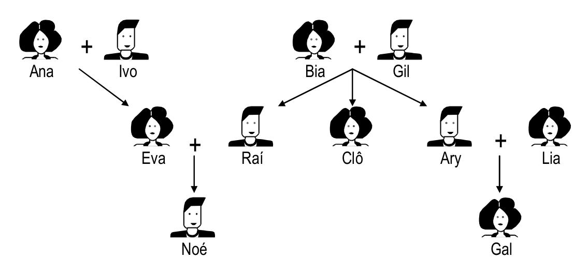

</p>
<h1>Tarefa 6 de Programação Funcional e Lógica</h1>
<h1>Visão geral</h1>
<p>Nesta tarefa você deverá implementar alguns predicados simples de testes em uma árvore genealógica simples, como tarefa introdutória de Prolog. Esta tarefa deve ser desenvolvida em sala de aula, preferencialmente. Este exercício foi adaptado do livro <a href="https://www.ime.usp.br/~slago/">"Introdução ao Prolog", de Silvio Lago</a>.</p>
<h1>Descrição</h1>
<h3>Tarefa 6.1: Árvore Genealógica</h3>
<p>Considere a seguinte árvore genealógica.</p>
<p></p>
<ol>
<li>Descreva fatos para representar a árvore genealógica abaixo usando predicados <code>mae</code>, <code>pai</code>, <code>homem</code> e <code>mulher</code>.</li>
<li>Descreva a regra <code>gerou(X,Y)</code> caso <code>X</code> seja mãe ou pai de <code>Y</code>.</li>
<li>Descreva uma regra para testar se uma pessoa é avô/avó de outra - <code>avo(X,Y)</code> - e se é sogra de outra - <code>sogra(X,Y)</code>.</li>
<li>Descreva uma regra para testar de duas pessoas são irmãs, por meio do predicado <code>irmao(X,Y)</code>.</li>
<li><p>Acrescente os seguintes fatos à base de cohecimento. </p>
<pre><code>nasceu(ana,1938).
nasceu(ivo,1939).
nasceu(bia,1940).
nasceu(gil,1940).
nasceu(eva,1960).
nasceu(rai,1958).
nasceu(clo,1967).
nasceu(ary,1967).
nasceu(lia,1967).
nasceu(noe,2001).
nasceu(gal,1997).
</code></pre></li>
<li>Descreva consultas para determinar quais pessoas nasceram no mesmo ano?</li>
<li>Descreva consultas para determinar com qual idade tinha a mãe de Clô quando ela nasceu?</li>
<li>Descreva consultas para determinar com qual idade as mães tiveram seus filhos? </li>
<li>Descreva consultas para determinar quais das pessoas na base de conhecimento são gêmeas?</li>
</ol>
<p>Certifique-se que os predicados e consultas descritas não retornem resultados inconsistentes como <em>"josé é irmão dele mesmo"</em>. Os resultado dessa tarefa devem ser entregues nos seguintes arquivos:</p>
<ul>
<li><strong><code>tarefa06.1-genealogia.pl</code></strong> - base de conhecimento (incluído 6.5) e regras do item 6.2 a 6.4</li>
<li><strong><code>tarefa06.1.6-consultas.txt</code></strong> - consulta do item 6.6</li>
<li><strong><code>tarefa06.1.6-resultados.txt</code></strong> - resultado da consulta do item anterior</li>
<li><strong><code>tarefa06.1.7-consultas.txt</code></strong> - consulta do item 6.7</li>
<li><strong><code>tarefa06.1.7-resultados.txt</code></strong> - resultado da consulta do item anterior</li>
<li><strong><code>tarefa06.1.8-consultas.txt</code></strong> - consulta do item 6.8</li>
<li><strong><code>tarefa06.1.8-resultados.txt</code></strong> - resultado da consulta do item anterior</li>
<li><strong><code>tarefa06.1.9-consultas.txt</code></strong> - consulta do item 6.9</li>
<li><strong><code>tarefa06.1.9-resultados.txt</code></strong> - resultado da consulta do item anterior</li>
</ul>
<h3>Tarefa 6.2: Almoço de Família</h3>
<p>Considere um almoço de família onde os participantes estão presentes à mesa na seguinte disposição (<code>ze</code> é namorado de <code>gal</code>):</p>
<pre><code> bia
ivo noe
gal rai
ze gil
lia clo
ary eva
ana
</code></pre>
<p>Nesta disposição, <code>ana</code> e <code>bia</code> estão nas pontas da mesa, <code>ary</code> está em frente a <code>eva</code> que está à direita de <code>ana</code> e esquerda de <code>clo</code>. <code>ary</code> está à esquerda de <code>ana</code>.</p>
<ol>
<li>Descreva a disposição de todos os participantes na mesa usando unicamente o predicado <code>sentado_esquerda_de</code> (deve ser um fato), quando uma pessoa estiver diretamente à esquerda de outra (deve estar ao lado).</li>
<li>Escreva regras para o predicado <code>sentado_direita_de</code> que indique que uma pessoa estiver à direita de outra, usando unicamente os fatos baseados no predicado <code>sentado_esquerda_de</code>.</li>
<li>Escreva regras para a cláusula <code>sao_vizinhos_de(X,Y,Z)</code> que deve retornar verdadeiro se <code>X</code> <strong>e</strong> <code>Y</code> estão sentados ao lado de <code>Z</code>.</li>
<li>Descreva as seguintes consultas:
<ol>
<li>Quem está sentado na mesa?</li>
<li>Quem está sentado a dois assentos de <code>gil</code> (são <code>noe</code> e <code>eva</code>)?</li>
<li>Quem está sentado entre <code>lia</code> e <code>gal</code>?</li>
</ol></li>
</ol>
<p>Os resultado dessa tarefa devem ser entregues nos seguintes arquivos:</p>
<ul>
<li><strong><code>tarefa06.2-almoco.pl</code></strong> - base de conhecimento e regras do item 6.2.3</li>
<li><strong><code>tarefa06.2.4-consultas.txt</code></strong> - as consultas do item 4</li>
<li><strong><code>tarefa06.2.4-resultados.txt</code></strong> - resultado da consulta do item anterior</li>
</ul>
<h1>Requisitos</h1>
<p>Os arquivos desta tarefa devem ser submetidos pelo <a href="https://classroom.github.com/">GitHub Classroom</a>, no local indicado pelo email com o assunto: <strong><code>[PFL] submissão da tarefa 06 - Árvore Genealógica</code></strong>.
2. As tarefas são individuais e nenhum tipo de cópia ou similaridade com código, seja de outro aluno, seja da Internet ou livros, será aceita.</p>
<h1>Prazo</h1>
<p>O prazo para entrega da atividade é o dia <strong>19 de novembro</strong> (segunda). Depois desse prazo, você poderá efetuar correções na sua implementação - quando solicitadas pelo professor - em até 7 dias adicionais.</p>
<p>